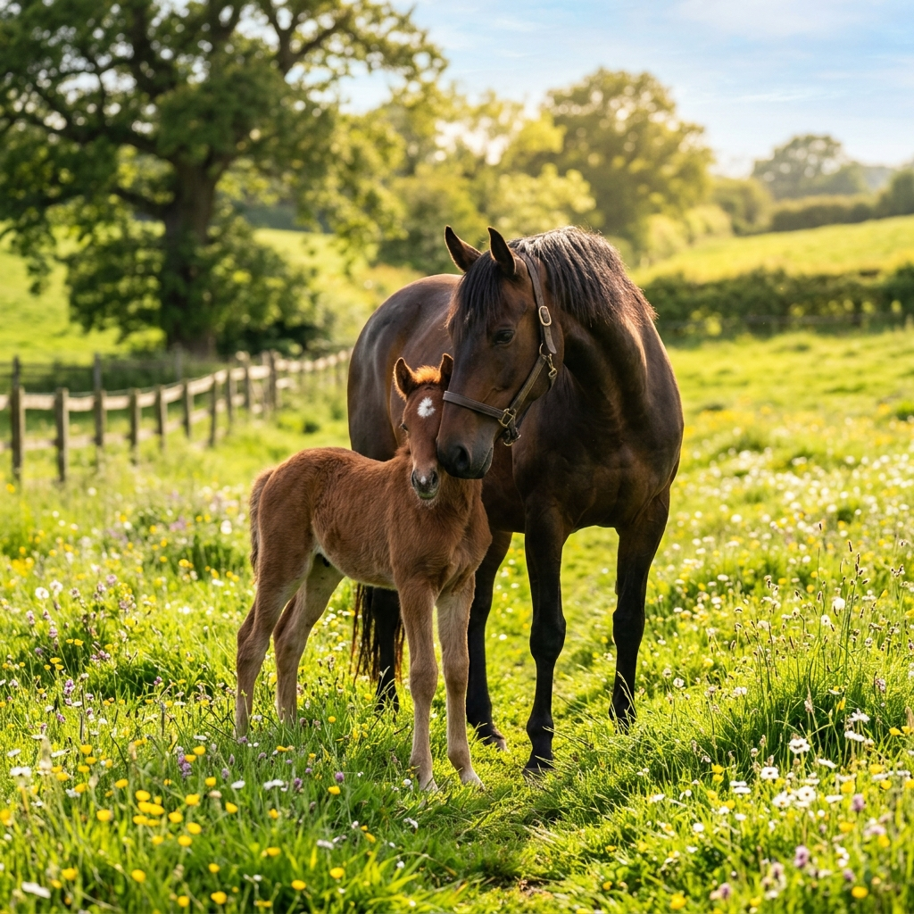
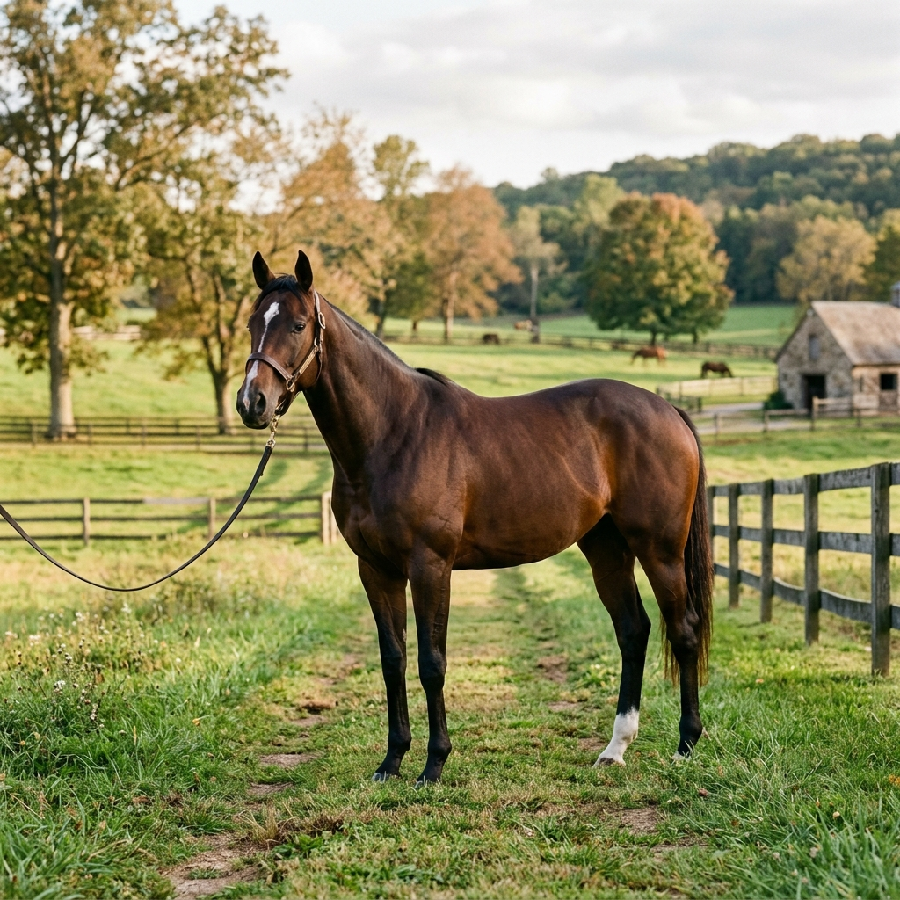

Centre Équestre d'Excellence
Notre centre équestre propose une pédagogie innovante et bienveillante pour les cavaliers de tous âges et de tous niveaux. L'apprentissage est centré sur le respect mutuel, la compréhension de l'éthologie et la technique équestre.
- Cours collectifs en petits groupes (max 6 cavaliers) pour un suivi personnalisé.
- Installations haut de gamme : carrière de CSO olympique (80x40m) et manège couvert éclairé.
- Éducation éthologique au sol et travail de complicité en liberté.
- Stages de perfectionnement, passage de galops et préparation à la compétition.

Balades & Randonnées Sauvages
Situé en lisière de magnifiques massifs forestiers, notre domaine bénéficie d'un accès direct à des kilomètres de sentiers préservés. Nos randonnées vous offrent une déconnexion totale en harmonie complète avec la nature.
- Balades de 1 à 3 heures pour tous niveaux dans des forêts de pins et de chênes.
- Randonnées thématiques à la journée ou week-ends avec bivouac ou gîte d'étape.
- Cavalerie de randonnée d'expérience, calme, équilibrée et habituée aux terrains variés.
- Matériel de randonnée premium assurant le confort absolu du cheval et du cavalier.

Élevage de Prestige & Passion
Notre élevage familial est né de la passion des grandes lignées de sport et du désir de produire des chevaux équilibrés dans leur tête et dans leur corps. Nous accordons une importance primordiale au mental de nos reproducteurs.
- Sélection de poulinières aux origines reconnues (Selle Français, Connemara).
- Croissances naturelles en troupeau épanoui au sein de nos vastes pâturages de l'écurie.
- Manipulation précoce des poulains selon des méthodes douces et positives.
- Suivi vétérinaire, ostéopathique et nutritionnel sur mesure pour chaque cheval.

Reconversion de Chevaux Réformés
Fervents défenseurs de la cause animale, nous nous sommes spécialisés dans la reconversion éthique des chevaux réformés des courses (Trotteurs Français, Pur-Sangs). Nous leur offrons le temps, la patience et le savoir-faire nécessaires pour entamer une nouvelle vie épanouie.
- Période de transition physique et mentale au grand air (remise au repos au pré).
- Rééducation éthologique au sol pour désapprendre le stress des hippodromes.
- Apprentissage progressif du galop équilibré, du travail sur le plat et en extérieur.
- Vente à prix d'or encadrée avec un contrat de suivi garantissant leur avenir.